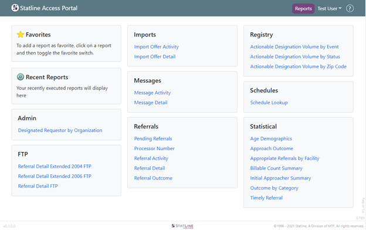
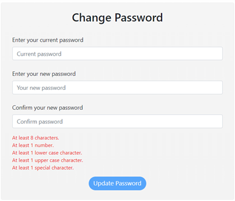
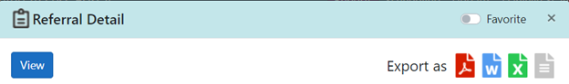

This section outlines the details of the Statline Access Portal home screen including the Reports, User Information, and Help section.
Reports Tab Summary: The home screen displays all reports which the user may run to view their service area information. The home screen will vary by user depending on the report permissions assigned including Report Section headers and the individual reports. Report permissions are assigned by Statline per the direction of the manager or supervisor of everyone. The below sections will discuss the specifics of this page.
Designated Requestor by Organization
Referral Detail Extended 2004 FTP
Referral Detail Extended 2006 FTP
Referral Detail FTP
Import Offer Activity
Import Offer Detail
Message Activity
Message Detail
Pending Referrals
Referral Activity
Referral Detail
Referral Outcome
Actionable Designation Volume by Event
Actionable Designation Volume by Status
Actionable Designation Volume by Zip Code
Schedule Lookup
Age Demographics
Approach Outcome
Appropriate Referrals by Facility
Billable Count Summary
Outcome by Category
Timely Referral

User’s Name Tab Summary- The logged in user’s name as documented in Statline’s internal system will appear in the top right corner of the Statline Access Portal’s home screen. There is an arrow located at the right side which allows users to logout of their current session or change their password.

Statline Access Portal Help Summary- The question mark icon located at the top right of the home screen is the Statline Access Portal Help section. Selecting this icon will take you the help section of the Statline Access Portal. Information regarding the Statline Access Portal will be found in this section.
Parameters Screen
Report Parament Screen Overall Summary: Once a report is selected from the home screen, the report’s parameter screen will appear. The parameters will vary for each report which will be discussed in report details, however there are a few consistencies which will be reviewed below.

Parameter Screen Constants
Report Updated Nomenclature
With the recent transition to the Statline Access Portal, some of the reports received a new name to better describe their intent. The original and updated names are listed below to assist in identifying which reports were updated.